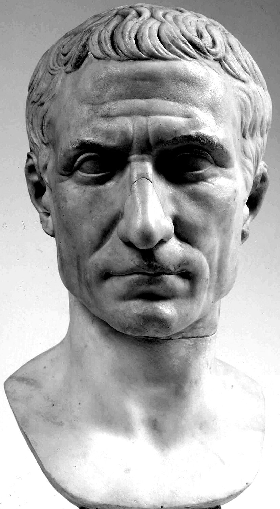
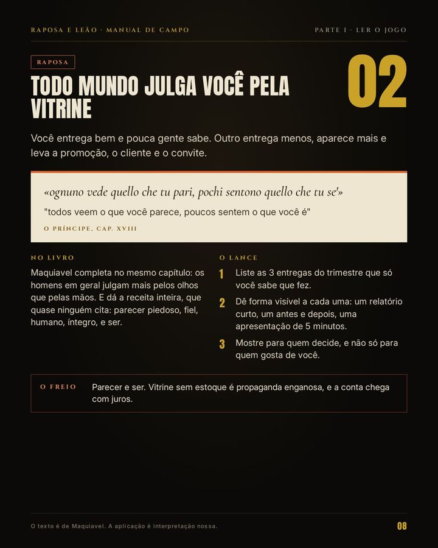
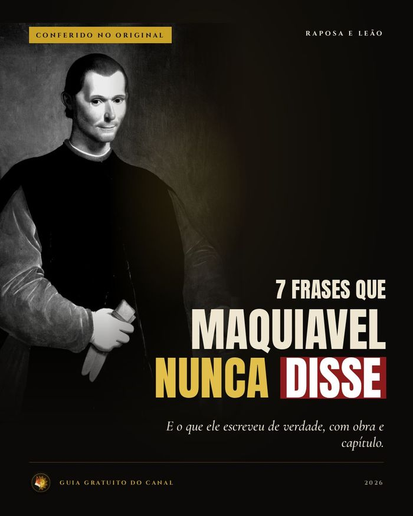
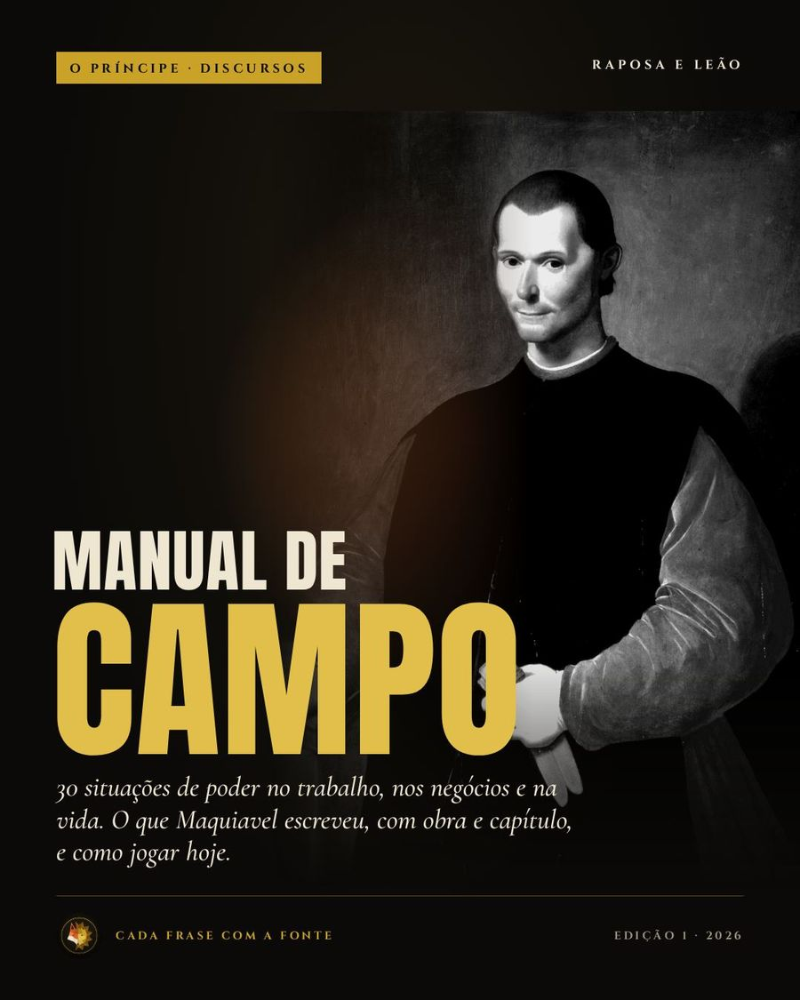

30 situações de poder no trabalho, nos negócios e na vida. O que Maquiavel escreveu, com obra e capítulo, e o que fazer na segunda-feira.
Acesso na hora, pelo e-mail da compra. Pix ou cartão.
"Entrego mais que ele, e quem leva o crédito é sempre ele."
"Cedi para não brigar, e agora ele pede mais."
"Fico adiando a conversa difícil, e a situação só piora."
Você já viu dezenas de vídeos sobre Maquiavel. Guardou frases fortes. Na hora de decidir, nenhuma delas diz o que fazer na segunda-feira.
E parte delas nem é dele. "Os fins justificam os meios" não está em nenhuma obra. "É melhor ser temido do que amado" foi cortada no meio.
O Manual de Campo faz o caminho inverso: começa pela situação que você está vivendo e vai até o texto. Ali está o que ele escreveu de fato, o que fazer hoje e onde parar.

«bisogna adunque essere golpe a conoscere e' lacci, e lione a sbigottire e' lupi»
"é preciso ser raposa para conhecer as armadilhas e leão para assustar os lobos"
O Príncipe, cap. XVIII
12345Arraste para o lado →
Ler o jogo, carreira e comando, dinheiro e negociação, aliados e traição, rivais e conflito, fortuna e domínio próprio.
Um roteiro para qualquer decisão que pese: verdade efetiva, armas próprias, ódio e desprezo, a hora de agir.
Para imprimir ou copiar no caderno. Separa fato de esperança antes de você escolher.
Um capítulo por linha, para saber onde procurar no livro inteiro.
Cada trecho em italiano foi comparado, palavra por palavra, com o original: O Príncipe na edição crítica de Giorgio Inglese (Einaudi, 1995) e os Discursos no texto de domínio público. O texto é de Maquiavel. A aplicação é interpretação nossa, e o manual separa uma coisa da outra em toda página.

O guia de 11 páginas com a frase falsa, de onde ela veio e o que está escrito de verdade.
Baixar o guia grátisOs fins justificam os meiosNÃO EXISTE
Melhor ser temido do que amadoCORTADA
Amigos perto, inimigos mais pertoÉ DE FILME
Dividir para reinarNÃO É DELE
Basta parecer bom. Não precisa ser.MEIA-VERDADE

Pagamento único. Pix ou cartão. Acesso na hora.
Leia com calma. Se em 7 dias achar que não é para você, peça o reembolso pela plataforma e devolvemos o valor inteiro, sem pergunta. É um direito seu.
Logo depois do pagamento, chega o acesso no e-mail da compra. O PDF abre no celular, no tablet e no computador, e pode ser impresso.
Não. Cada página explica o trecho que usa. Se depois quiser ler o livro, o manual traz um mapa de 26 linhas para você não se perder.
Não. O manual explica como o poder funciona e onde está o limite. Toda situação termina com um freio, e nada ali ensina enganar, ameaçar ou fazer algo ilegal.
Não prometemos resultado. O manual ajuda a enxergar a situação e a decidir com mais calma. O que acontece depois depende de você, dos outros e, como o próprio Maquiavel dizia, também da sorte.
Sim. Cada citação em italiano foi conferida no original e vem com obra e capítulo. As traduções são livres e simples, para ler de primeira.
Você tem 7 dias para pedir o reembolso integral pela plataforma de pagamento.
«sanza quella virtù la occasione sarebbe venuta invano»Quero o Manual de Campo
"sem aquela virtù, a ocasião teria vindo em vão" · O Príncipe, cap. VI